Combat
Magic
75 for the quest cape block; 99 in the combat block after the Diary Cape.
Your Level
68of 75
XP 629,877To 75 580,544
Target75 → 99
MethodBursting/barraging Slayer tasks
Options9
Your Pick
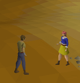
Bursting/barraging Slayer tasks
Your Pick. Nechryael and dust devils in the Catacombs, smoke devils, jellies. Best XP-plus-Slayer combination in the game, but rune-hungry.
Open Decision
No Method Locked In
The plan sets a target here but does not name a method. Pick one with the circle at the end of any row below.
Methods
At 68 Magic, the best option open to you is Bursting/barraging Slayer tasks (100–250k/hr). Locked rows need a higher level.
| Image | Method | Requirement | XP/hr | Notes | Choose |
|---|---|---|---|---|---|
| Bursting/barraging Slayer tasksbest at your level | Desert Treasure I | 100–250k | Your Pick. Nechryael and dust devils in the Catacombs, smoke devils, jellies. Best XP-plus-Slayer combination in the game, but rune-hungry. | ||
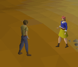 | Bursting maniacal monkeysneeds 70 Magic | MM2, 70 Magic | 200–300k | The fastest Magic XP in the game. Ice Burst on 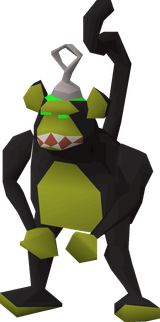 maniacal monkeys after Monkey Madness II, and it doubles as the | |
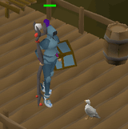 | Splashing | — | 10–30k | Near-zero attention, near-zero rate. Only worth it if you genuinely cannot play actively. | |
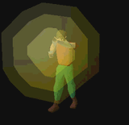 | High Alchemy | 55 | 65k | 78k GP-ish per hour spent; the classic buyable Magic. Combine with another activity. | |
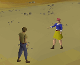 | Stun-alching | — | ~150k | Curse/Vulnerability + High Alch at NMZ. Fast but fully click-bound and expensive. | |
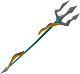 | Powered staff on Slayer | — | 40–80k | Trident/Sang on tasks. No rune cost beyond charges. | |
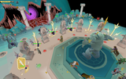 | Guardians of the Rift | 27 RC | moderate | Side Magic XP while training Runecraft. | |
| Tele-alch | 55 | ~100k | Alternate a teleport with High Alchemy for a faster loop than alching alone. Costs more per hour but no combat needed. | ||
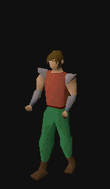 | Superheat / Enchant bolts | 43+ | varies | Doubles up with Smithing / 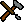 Crafting when you're doing those anyway. |
Notes
- Barrage tasks are the single best overlap in your plan. Magic XP,
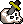
Slayer XP and Slayer points from the same hour. - Budget for runes. If the cost gets uncomfortable, fall back to trident tasks and take Magic to 99 later in the combat block.